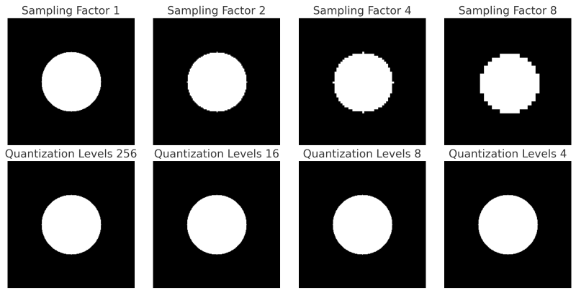
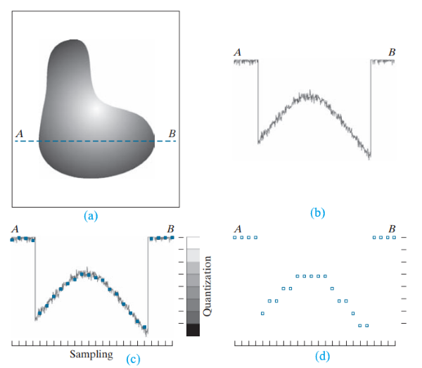
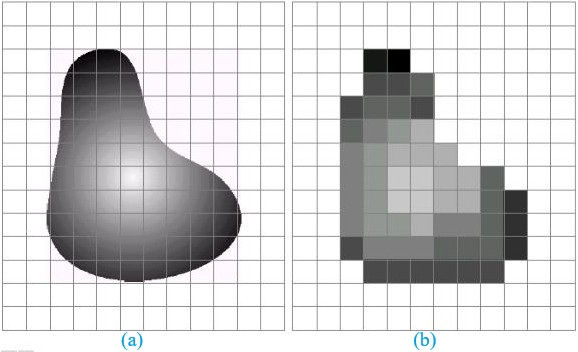

Introduction
The digital representation of images is fundamental to numerous applications, including medical imaging, satellite photography, remote sensing, and computer vision. The process of converting a continuous analog image into a digital format involves two crucial steps:
- Sampling: it refers to selecting discrete points from the continuous image to create a digital representation.
- Quantization: it involves mapping a range of intensity values to a limited number of discrete levels, reducing the data required for storage and processing.

- Top row: Shows how reducing the sampling rate (higher sampling factor) affects image resolution. As the factor increases, image details are lost.
- Bottom row: Displays the impact of reducing quantization levels (bit depth). With fewer levels, the image becomes more posterized, losing smooth transitions in shades.
Image Sampling
Sampling is the process of converting a continuous-tone image into a discrete form by selecting a finite number of points, called pixels. The sampling process directly affects the spatial resolution of the digital image.
- Spatial Resolution and Sampling Rate
Spatial resolution defines the number of pixels used to represent an image. The sampling rate determines how frequently pixels are taken from the continuous image. A higher sampling rate results in finer details and better quality, whereas a lower sampling rate may lead to loss of critical image information. - The Nyquist Sampling Theorem
To accurately represent an image without introducing distortions, the Nyquist theorem states that the sampling frequency should be at least twice the highest frequency present in the image. If the sampling rate is too low, high-frequency components will be misrepresented as lower frequencies, leading to aliasing artifacts. - Aliasing and Its Effects
Aliasing occurs when the sampling rate is insufficient to capture the high-frequency details in an image, resulting in distortions such as Moiré patterns, jagged edges, and loss of fine details.

(c) Sampling and Quantization (d) Digital scan line
Image Quantization
Quantization is the process of reducing the number of distinct intensity levels in an image, converting a continuous range of values into a finite set.
- Quantization Levels and Bit Depth
The number of quantization levels defines how accurately pixel intensities are represented. The bit depth of an image refers to the number of bits used to store the intensity of each pixel. - Effects of Quantization
- Higher Quantization Levels → More accurate intensity representation, higher quality, but larger file size.
- Lower Quantization Levels → Reduces file size but can cause visual artifacts such as false contouring and loss of detail.

Applications of Image Sampling and Quantization
- Medical Imaging - Ensures accurate diagnosis while minimizing storage and processing requirements.
- Image Compression - Used in JPEG and PNG formats to optimize storage without significant quality loss.
- Computer Vision and AI - Properly sampled and quantized images improve object detection and machine learning accuracy.
- Remote Sensing - Satellite images require high-resolution sampling for climate monitoring and urban planning.
Conclusion
Image sampling and quantization are essential steps in digital image processing that impact resolution, storage efficiency, and visual quality. Proper selection of sampling rates and quantization levels ensures a balance between image fidelity and computational efficiency, benefiting diverse fields such as medical imaging, AI, remote sensing, and digital media.